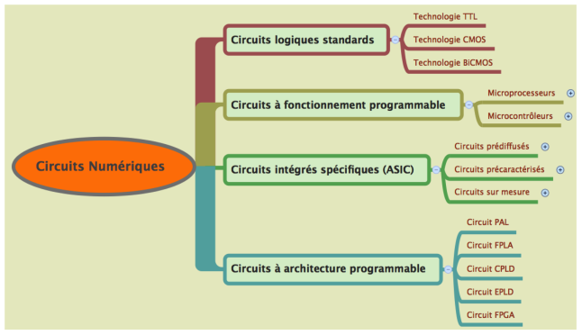

Figure : Circuits numériques
Document en cours de relecture, version du 2015/01/25
Les circuits numériques peuvent être classés en quatre catégories:

Les circuits logiques standards dominés aujourd’hui par la technologie CMOS. Les circuits à fonctionnement programmables où on peut regrouper tous les processeurs (microprocesseurs, microcontrôleurs, DSP). Les circuits intégrés spécifiques (ASIC) où on peut citer les circuits pré-diffusés qui intègrent des réseaux de cellules logiques à base de transistors implantés mais non interconnectés. En fonction de l’application visée, l’interconnexion des cellules logiques permet de personnaliser le circuit. Les circuits précarctérisés constituent un assemblage de fonctions prédéfinies et précaractérisées électriquement par le fabricant (éléments de bibliothèques) Les circuits sur mesure représente une solution optimale en termes de densité et de performance adaptée aux exigences du client (l’utilisateur) . Les ASICs présentent l’avantage de garantir les performances maximales mais ont un temps de développement long et un coût de développement en augmentation.
Les circuits logiques programmables sont constitués d’un ensemble de portes logiques (ou cellules logiques) reliées par des interconnexions reconfigurables. Les reconfigurations se font par des ET, OU, Bascules, RAM, multiplexeurs, registres, etc. Plusieurs sigles existent pour désigner les circuits logiques programmables. Le terme programmation ici est au sens reconfiguration des interconnexions. Il existe des circuits reconfigurables une seule fois avec la technologie anti-fusible ou plusieurs fois avec les technologies FLASH, EEPROM, SRAM Ces différents termes permettent de désigner la technologie des interconnexions. En effet dans les circuits PAL les interconnexion se font à base de fusible, les EPLD utilise une technologie FLASH et les FPGA utilise des mémoires RAM.
Figure : Circuits numériques
Les différents sigles des circuits logiques programmables sont :
Les FPGA sont constitués de blocs logiques appelés cellules qui sont des portes logiques, des SRAM, des bascules, etc et un réseau de fils de connexion que l’on peut assembler par programmation avec des AND, OR, registres, etc. Chaque constructeur définit son propre bloc logique.
Les portes logiques et autres composants sont réparties dans le circuit de manière ordonnée, en groupes appelés blocs logiques configurables. Synthètiser une fonction logique revient à interconnecter un certain nombre de blocs logiques (mapping), puis reliées les uns aux autres par des fils de connexions (routage).
Les circuits logiques programmables de type FPGA sont très utilisés dans la conception des circuits logiques. Ils présentent les avantages suivants:
Les FPGA sont inventés par XILINX qui sont leaders sur le marché (49%). ALTERA a une part de marché de prés de plus de 40%.
Plusieurs niveaux de description existent pour synthétiser un circuit logique:
La méthodologie de conception d’un circuit logique avec les FPGA se décline en quatre étapes:

Figure : Conception FPGA
La Synthèse des circuits logiques avec les FPGA s’appuie principalement sur leux principaux plateformes de développement
Quartus est un logiciel développé par la société Altera pour la conception, la simulation, la synthèse et l’implémentation de circuits numériques. Le logiciel permet la spécification en mode graphique, par description HDL(VHDL ou Verilog) des circuits logiques. Xilink ISE est un logiciel développé par la société Xilink
Le CYLONE II d’ALTERA est un FPGA qui Compte de 68416 éléments logiques regroupés par blocs de 16.

Figure : Cyclone II
Le CYLONE II compte quatre boucles à verrouillage de phase (PLL). Les blocs logiques disposent d’éléments d'entrée / sorties,de multiplicateurs embarqués, et de blocs mémoire embarquée. La configuration rapide du circuit peut se faire en moins de 100ms. Il intègre le mode de configuration série USB BLASTER ou JTAG
Figure : Cyclone II
Un élément logique du Cyclone II dispose de 4 entrées permettant représenter n’importe quelle fonction logique à 4 entrées, d’un registre de sortie programmable, d’une entrée de retenue provenant de l’élément logique précèdent et d’une sortie de retenue pour l’élément suivant. Un élément logique dispose également de lien d’interconnexion local, ligne colonne, direct, de registre.
Figure : Cyclone II-interconnexion BL
Un bloc logique est constitué de 16 éléments logiques. Un réseau local d’interconnexion permet la communication entre EL d’un même bloc. Les liaisons directs permettent l’interconnexion des BL adjacents, il existe aussi un bloc mémoire, un signal d’horloge, un multiplieur et entrée sortie entre bloc adjacent. Un réseaux d’interconnexion ligne colonne existe entre BL.
Notre environnement de travail est constitué d’un logiciel, d’une carte de développement, d’une matrice à LED et éventuellement d’un simulateur.
QUARTUS II Web Edition : est un logiciel permettant le développement jusqu’à l’implémentation sur la carte FPGA. Il est à téléchargement gratuit sur www.altera.com. Un modèle du simulateur ModelSim existe avec ALTERA ModelSim-Altera Web Edition.
Nous travaillerons avec les cartes de développement DE0 et DE2 d’ALTERA.

Figure : DE0- NANO
Specifications FPGA
I/O Devices
Switches, LEDs, Displays, and Clocks
Prototyping Areas A 40-pin expansion port area compatible with Altera DE2/DE1 expansion ports. Prototyping Area A with 68 GPIO, 6 3.3V, 2 5V and 8 GND pins Prototyping Area B with 20 GPIO, 2 3.3V, and 2 GND pins

Figure : DE0- NANO
Specifications FPGA
I/O Devices
Switches, LEDs, Displays, and Clocks
Prototyping Areas Two 40-pin Headers GPIO compatible provide 72 I/O pin, 5V Power pin, Two 3,3V and four ground pins . 32MB SDRAM, 2Kb I2C EEPROM

Figure : DE2
Specifications FPGA
I/O Devices
Memory
Switches, LEDs, Displays, and Clocks